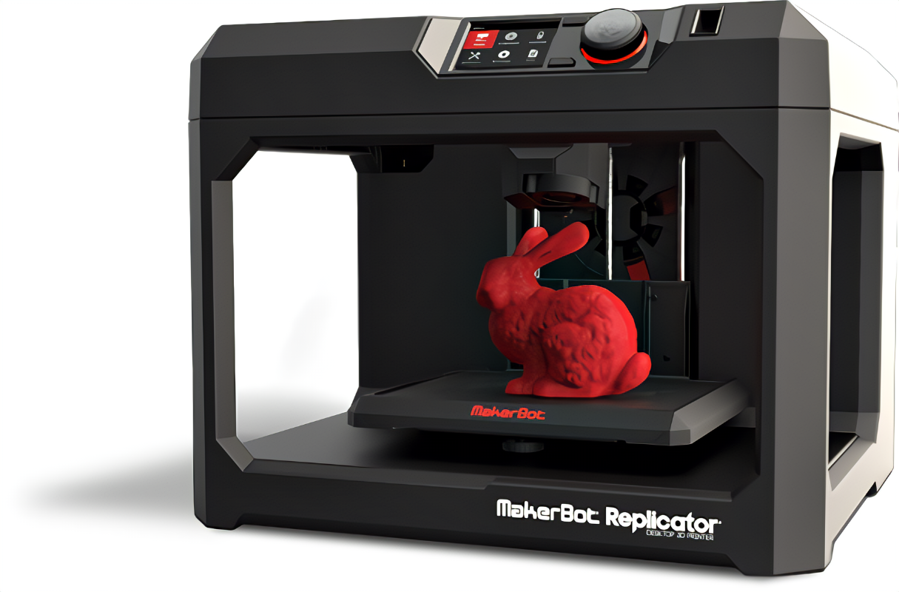

3D-nyomtatás egy olyan gyártási folyamat, amely lehetővé teszi valós, háromdimenziós tárgyak létrehozását digitális modellek alapján. Ez a folyamat rétegről rétegre történik, így a végeredmény egy olyan tárgy, amelyet additív módszerrel állítanak elő. Itt van néhány kulcsfontosságú dolog a 3D-nyomtatásról:
1. Digitális modellek: A 3D-nyomtatás alapja a digitális modellek. Ezek a modellek lehetnek létrehozva 3D-s CAD (számítógéppel támogatott tervezés) szoftverekkel, vagy letölthetőek az internetről.
2. Anyagok: A 3D-nyomtatás során sokféle anyag használható, beleértve a műanyagokat, fémet, fát, kerámia anyagokat és még sok mást. Az anyag kiválasztása attól függ, hogy milyen célból használják a nyomtatott tárgyat.
3. Rétegzés: A 3D-nyomtatás során a tárgyakat rétegről rétegre építik fel. Ez azt jelenti, hogy először egy réteget nyomtatnak, majd egy másikat hozzáadnak, és így tovább, egészen addig, amíg a teljes tárgy elkészül.
4. Alkalmazások: A 3D-nyomtatás számos iparágban alkalmazható, beleértve az autóipart, az egészségügyet, az építőipart, az oktatást és még sok mást. Használják prototípusok gyártására, személyre szabott orvosi eszközök készítésére, és akár házak nyomtatására is.
5. Előnyök: A 3D-nyomtatás számos előnnyel jár, mint például a gyors prototípusgyártás, az egyedi tervezési lehetőségek, és a kevesebb hulladék előállítása.
